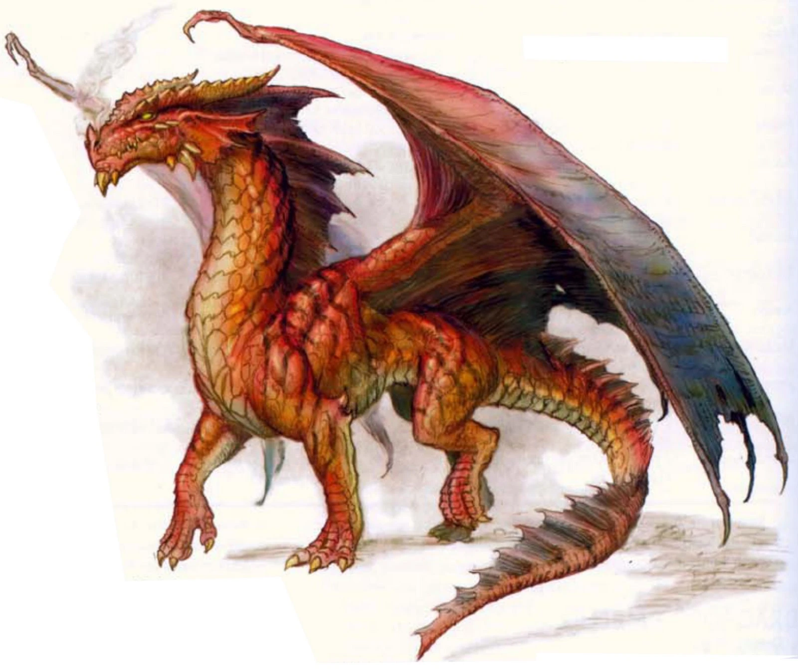

Dragão
Dragões ou dragos(do grego δράκων,drákōn, significando "grande serpente")são criaturas mitológicas presentes na mitologia de diversos povos, civilizações e culturas, com destaque para as tradições chinesa e europeia. A sua descrição depende do mito ou lenda em que aparece, mas são normalmente representados como lagartos ou serpentes de grande porte, escamas e asas, podendo ainda ter plumas, poderes mágicos e a capacidade de soprar fogo. Podem ser somente feras destruidoras ou ter funções e simbologias distintas, como fontes sobrenaturais de sabedoria e força.
Tipos de Dragões
- Dragão "normal"

- Dragão chines